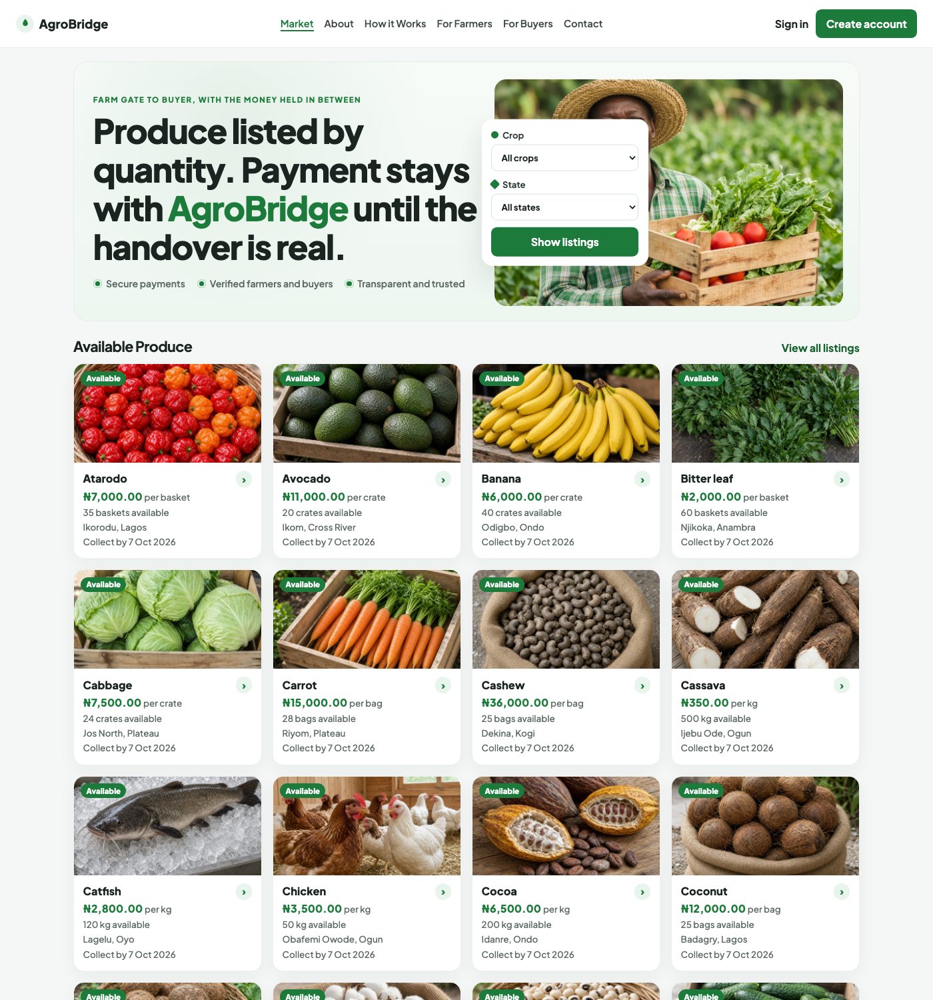
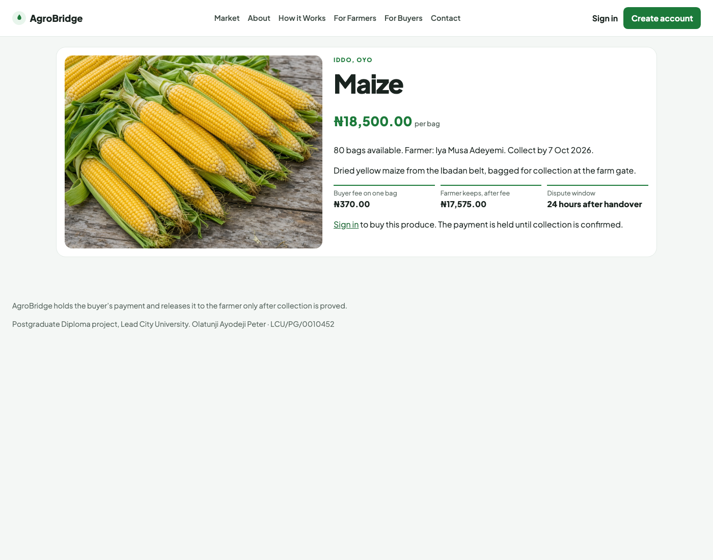
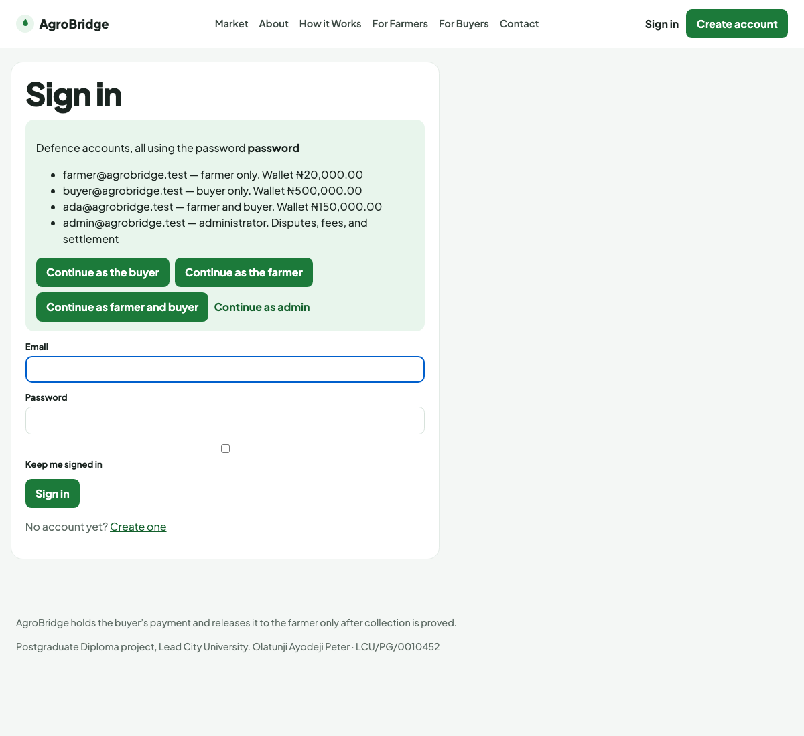
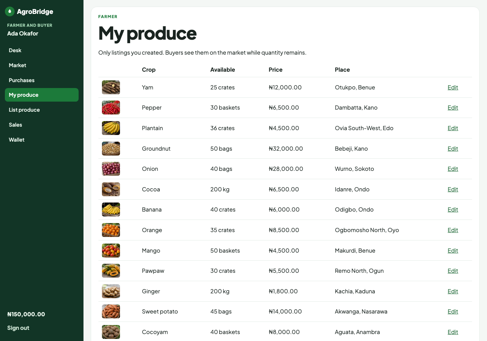
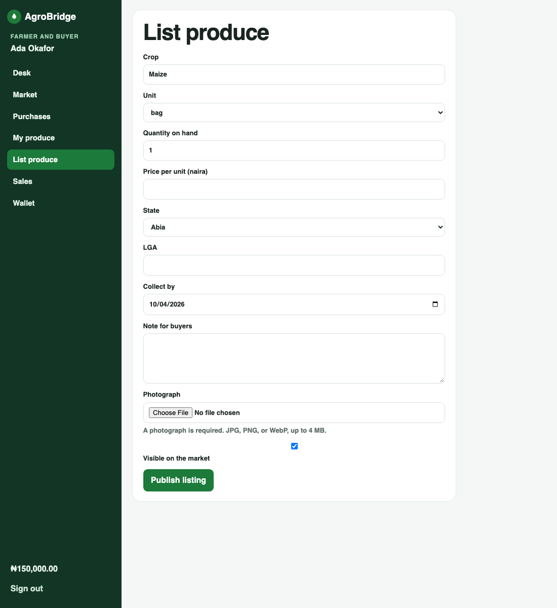
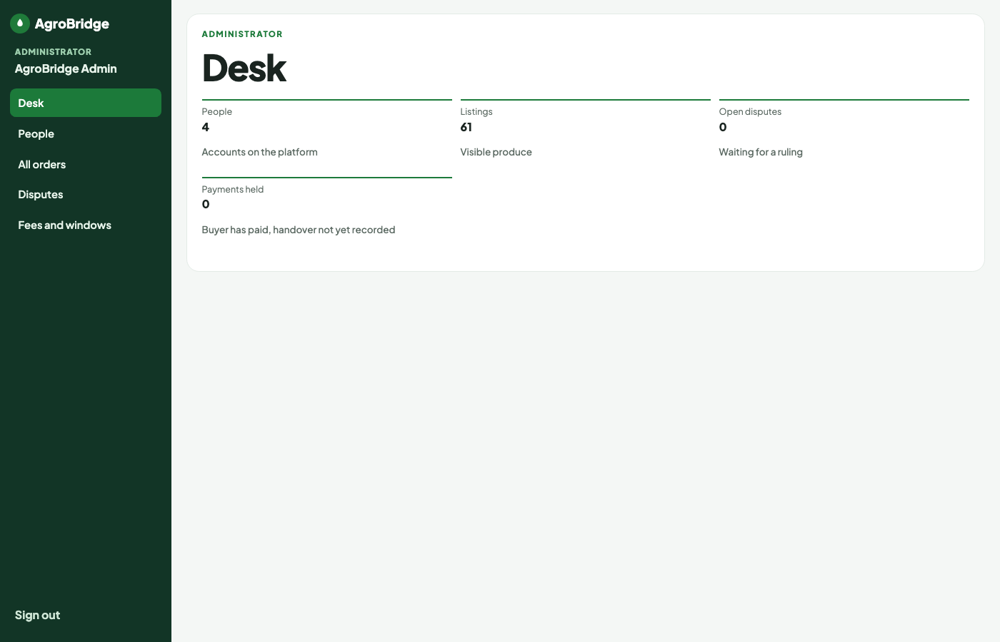
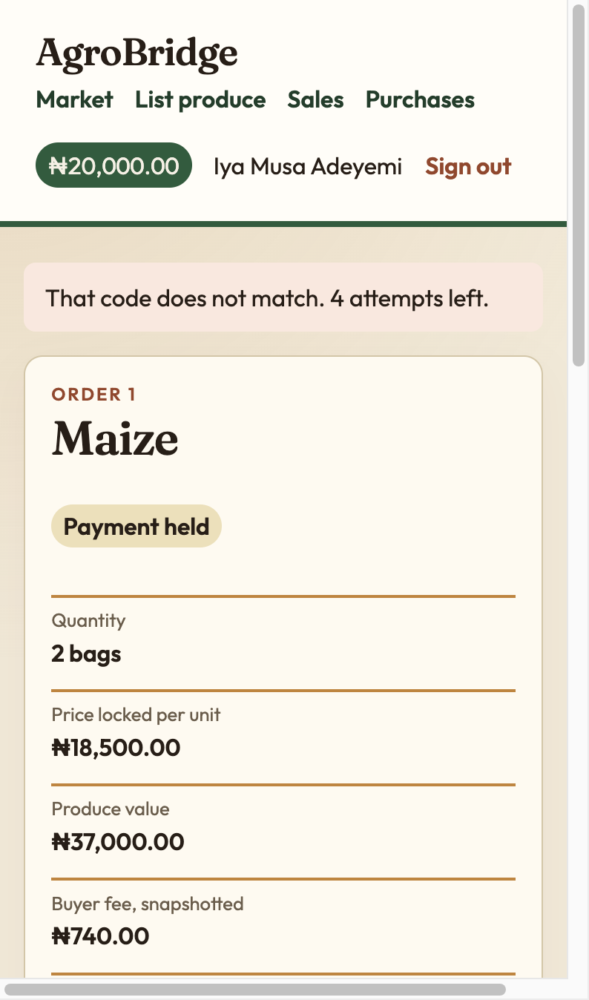

Chapter One
Introduction
1.1 Background to the Study
1.1.1 Smallholder Agriculture and Market Participation
Agriculture remains central to livelihoods across much of sub-Saharan Africa, and Nigeria is no exception. A large share of food that reaches urban and peri-urban markets is grown by smallholder farmers who operate on modest plots, sell in modest quantities, and depend on seasonal weather, local labour, and informal credit. For such farmers, the harvest is not an end in itself. It is the beginning of a commercial problem: how to find a buyer, agree a quantity and a price, move the produce, and receive payment that can be trusted. When any one of those steps fails, the farmer’s income fails with it, even if the crop in the field was sound.
In practice, market participation for many smallholders is still organised through personal networks. The farmer meets an aggregator, a market woman, a transporter who also trades, or a neighbour who knows someone in the next town. The price is negotiated where the bags are standing or where the baskets are counted. Payment, if it is not cash at the farm gate, is a promise—sometimes fulfilled the same day, sometimes delayed, sometimes disputed after the goods have left. The promise is the weak point. The buyer who pays first can be left with nothing. The farmer who releases the bags first can be left unpaid. Because both fears are reasonable, many sales stay small, local, and dependent on a middleman who is trusted only because he is known.
That pattern is not merely a cultural preference for face-to-face dealing. It is a rational response to incomplete information and weak enforcement. A distant buyer cannot easily inspect condition, quantity, and collection logistics before committing money. A distant farmer cannot easily compel payment after the produce has moved. Intermediaries persist because they specialise in bridging those gaps: they know both sides, they absorb some risk, and they charge for that service. Whether the charge is fair is a separate question. What matters for this study is that dependence on intermediaries is reinforced whenever software, phones, or market boards publish prices without also publishing an enforceable path for payment and handover.
Quantity makes the farm case different from many consumer online sales. A farmer does not usually sell “one listing” in the way a person sells one used telephone. He sells some bags out of many, or some kilograms out of a heap, and the remainder must stay available for other buyers. Any digital platform that treats a listing as an all-or-nothing object will either lock an entire heap for one buyer or fail to prevent two buyers from believing they have purchased the same units. Market access, in software terms, therefore includes divisible stock: a quantity on hand, a quantity reserved while payment is pending, and a quantity released back to the market when a reservation expires.
1.1.2 Information, Trust and Payment Friction
Information and communication technologies have already changed agricultural markets in measurable ways. Studies of mobile phones show that when search costs fall, prices across markets move closer together and less produce is wasted because sellers hear, in time, where the demand is.1 Grain markets in Niger showed a similar pattern after mobile coverage arrived: price gaps between markets narrowed, especially where travel was expensive.2 Those findings matter. They demonstrate that technology can improve the efficiency of primary-product markets without changing the crop itself.
They are not, however, the whole problem. Knowing a better price does not, by itself, move the money. A farmer who learns that pepper is paying well in another town still has to trust a stranger to pay after the baskets have left. A review of information and communication technologies in agricultural development found that market performance often improves at the wide level, while the gain for an individual farm is uneven and depends on the crop and the channel.3 Perishable crops make the timing worse. A basket of tomato cannot wait for a long argument. A large part of the loss in sub-Saharan supply chains is economic as well as physical: produce that reaches a buyer late, or at the wrong place, is sold badly or not at all.4
Trust, in this setting, is not a soft slogan. It is the belief that the other party will perform after one has already committed goods or money. Where that belief is weak, trade shrinks to acquaintances. Where it can be supported by an institution that neither party controls alone, trade can extend to strangers. Online markets in other industries have faced the same distrust. Buyers who cannot inspect the goods, and sellers who cannot see the buyer, complete more transactions when feedback, guarantees, or third-party escrow stand between them.5 Escrow, in plain terms, means the buyer’s money is paid to a holder who is not the seller, and the holder releases it only when an agreed condition is met. For farm produce the condition has to be collection that the buyer, and not the farmer alone, can prove.
Payment friction in informal Nigerian agricultural trade therefore has three layers. The first is discovery: finding who wants what quantity, where, and at what price. The second is commitment: agreeing that a stated quantity is reserved for a stated buyer long enough for payment and collection to occur. The third is settlement: moving money only when handover is real, and returning money or stock when it is not. Mobile phones and market-information services address the first layer more than the second and third. A software platform that lists quantity and holds payment is an attempt to address all three in one place.
1.1.3 Digital Platforms and Institutional Escrow
A digital platform, as used in this study, is a software system that brings two or more sides of a market together under shared rules. The rules matter more than the branding. If a seller can certify delivery alone and thereby release payment to himself, the platform is not an escrow institution; it is a convenience layer over the same old promise. If fees can change after a buyer has agreed to an order, the platform is not a fair counterparty; it is a moving target. If reserved quantity is not returned when payment fails, the platform creates artificial scarcity and punishes other buyers.
AgroBridge is a digital platform built around those institutional constraints. The name states the aim. It is a bridge between a farmer who has quantity to sell and a buyer who will pay, with the platform holding the payment in the middle. The farmer uploads the product, the quantity, the unit, the price per unit, the state, the local government area, and the date by which the produce should be collected. A buyer orders some or all of the quantity that is still free. The platform reserves that quantity, takes the payment into a held balance, and releases it to the farmer only after handover is proved and a short dispute window has closed. The design rule that carries the whole product is deliberate: the farmer cannot release the money by claiming that the produce was delivered. There is no such control.
The platform is implemented as a web application for a Postgraduate Diploma in Software Engineering. It therefore emphasises requirements, a persistent data model, a state machine for money, role-based interfaces, and automated tests that fail if the money rules are broken. It does not claim to be a licensed payment service. It claims to be a complete, examinable statement of the software rules such a service would have to enforce if it were later connected to a regulated payment holder.
1.2 Statement of the Problem
Smallholder farmers lose market access where three failures occur together. First, a buyer at a distance cannot see a reliable statement of what is for sale, in what quantity, at what price, and where it can be collected. Listings, if they exist at all, are informal messages that cannot reserve stock or prove what was offered. Second, neither party will move first with money or with goods, because each has been disappointed by informal promises. The resulting stalemate keeps trade local even when a better price exists farther away. Third, existing information tools, including the mobile phone, tell people about prices without holding the payment that would let them act on that information. The result is continued dependence on intermediaries, slow payment, and produce that spoils or is sold below what a more distant buyer would have paid.34
Commercial marketplaces and payment products illustrate that institutional holding of funds is possible at scale in other domains. What is missing for the smallholder case examined here is a working, quantity-based farm listing whose payment the seller cannot release by his own say-so, with a dispute window short enough for perishable crops, and with fees frozen at the moment of the order so that later administrative changes are not retroactive.
A student project cannot lawfully operate a licensed escrow account for real public money. The problem this project can solve is therefore the design, development, and evaluation of the software rules that such a platform would have to enforce: quantity that can be sold in parts; a payment that is held; a handover that the seller cannot certify alone; a dispute window appropriate to perishable produce; and fees and windows that do not change after a buyer has agreed to them.
1.2.1 Consequences of the Problem for Software Design
Stating the problem as three failures—visibility, commitment, and settlement—has direct consequences for software design. Visibility requires listings that are searchable and that display quantity, price, place, and a photograph. Commitment requires reservations that are atomic with respect to concurrent buyers. Settlement requires a held balance, a handover proof the seller cannot forge alone, and time bounds that protect perishable value. A system that implements only visibility is a noticeboard. A system that implements visibility and commitment without settlement is a reservation book that still ends in a handshake. AgroBridge is designed to implement all three.
Those consequences also explain what was not built. A recommendation engine for prices would address visibility of opportunities but not settlement. A chat module would address negotiation but not enforceable holding of funds. A logistics marketplace would address movement of goods but could still leave payment as a private promise. Features were judged by whether they advanced the three failures named in the problem statement.
1.3 Aim and Objectives of the Study
The aim of the study is to design and develop a digital platform that improves agricultural market access for smallholder farmers by holding the buyer’s payment until collection is proved.
The specific objectives are:
- To examine the market-access constraints that make cash and middlemen the default for smallholder sales, with attention to information gaps, trust failures, and payment friction.
- To specify a system in which a farmer lists produce by quantity and a buyer may purchase part of that quantity, with clear roles for farmer, buyer, and administrator.
- To implement a hold-and-release payment mechanism in which the seller cannot pay himself by asserting delivery, and in which fees and windows are snapshotted onto each order.
- To evaluate that reserved stock returns if the buyer does not pay, that a wallet cannot be overspent, that a later change of fee does not rewrite an order already placed, and that the implemented behaviour answers the research questions.
1.4 Research Questions
The study is guided by the following questions:
- What information and payment failures limit the access of smallholder farmers to buyers?
- How can a software platform list farm produce by quantity and hold the buyer’s payment until handover is proved by the buyer?
- Do the implemented rules keep reserved stock, wallet balances, and agreed fees consistent when ordinary failure cases occur?
1.5 Significance of the Study
For a farmer, a listing that states quantity and price in the open is a way to be seen by a buyer who is not standing in the same market. Visibility alone is not enough; the listing must also support partial sales and a payment path that does not require the farmer to release goods on a verbal promise. For a buyer, a held payment is a way to commit money without handing it to a person who might not deliver. For administrators of a future production system, snapshotted fees and auditable dispute notes provide a record that can be inspected when disagreements arise.
For the Department of Computer Science, the project is an application of software engineering: requirements elicitation from a real-world problem, design of persistent data and state transitions, implementation in a modern web framework, and evaluation through automated tests that encode the critical invariants. For policy and for later commercial work, the prototype shows the shape of a payment hold that a licensed partner, such as a payment company operating under Central Bank of Nigeria rules, would later have to carry. This submission does not claim that farmers have already adopted the platform. It claims that the platform can be built so that the money rule is enforceable in software.
The significance is therefore both practical and pedagogical. Practically, it offers a concrete reference implementation for quantity-based agricultural escrow on the web. Pedagogically, it demonstrates how a postgraduate software-engineering project can turn a socio-economic problem into testable system behaviour without inventing survey results that were never collected.
1.5.1 Significance for Software Engineering Education
Beyond the agricultural domain, the study is significant as an educational artefact in software engineering. Students are often asked to build CRUD applications whose correctness is visual. Money systems demand a higher standard: invariants, ledgers, and tests that fail loudly. By choosing escrow for perishable farm produce, the project forces those standards into a diploma-sized scope. Examiners can ask not only “does the page load?” but “can the farmer pay himself?” and receive a demonstrated answer.
1.6 Scope of the Study
The system is a web application. It has three kinds of account: a person who sells, a person who buys, and an administrator. One person may both sell and buy, but may not buy a listing that he or she created. After sign-in the public menu is replaced by a left-hand menu, and the items on that menu depend on the account. A buyer sees the market, purchases, and wallet. A farmer sees the farmer’s own listings, the form for a new listing, sales, and wallet. An administrator sees people, every order, disputes, and the fee settings, and does not see the buyer or farmer tools.
The demonstration data publishes sixty-one listings across Nigerian states, including grains, tubers, vegetables, fruit, and a few animal products, each with a photograph. A farmer who lists new produce must upload a photograph, and may later replace that photograph or remove it so the standard picture for the crop is used again. Units are the kilogram, the bag, the basket, and the crate. Payment is a demonstration wallet seeded with balances. No card is charged and no bank transfer is made. The dispute window defaults to twenty-four hours because the produce is perishable, and that window is copied onto each order so a later edit does not reopen a sale.
Auctions, barter, identity-card verification, mobile-native applications, logistics optimisation, quality grading laboratories, and a live payment gateway are outside the build. A questionnaire of farmers was not administered, so Chapter Four does not report adoption statistics. The geographic framing is Nigerian smallholder trade, but the software rules are not limited to one crop or one state.
1.7 Limitations of the Study
The study is limited in several ways that should be stated before results are interpreted. First, the wallet is a demonstration balance in the application database, not a licensed bank or payment-service account; real naira is not moved. Connecting a live gateway would require a business entity authorised to hold customer funds. Second, no questionnaire of farmers or buyers was administered, so the report does not claim measured adoption, satisfaction, or income effects. Third, the collection code proves that the buyer disclosed a secret to the farmer; it does not prove the quality or grade of the produce. Quality remains a reason to open a dispute, which a human administrator must judge. Fourth, evaluation focuses on automated tests of money and stock consistency, supplemented by structured defence walkthroughs, rather than a large-scale field trial. Fifth, the literature review draws on peer-reviewed studies of information, markets, and online trust; it does not pretend to be an exhaustive census of every agricultural marketplace product in Nigeria.
These limits are deliberate for a Postgraduate Diploma software-engineering project. They are addressed as suggestions for further studies in Chapter Five rather than as defects of the stated aim.
1.8 Operational Definition of Terms
Smallholder farmer. A producer who sells farm produce in modest quantities and who does not operate a large commercial estate. In this project the seller account is called the farmer.
Market access. The ability of that farmer to present quantity and price to a buyer and to complete a sale without depending only on a known intermediary.
Listing. A record of crop, unit, quantity on hand, price per unit, state, local government area, collection date, optional note, and photograph.
Available quantity. Quantity on hand minus quantity reserved for unpaid orders.
Escrow, or held payment. The buyer’s money after it has left the buyer’s available balance and before it has been paid to the farmer or refunded. In this prototype the hold is a ledger entry in the application database, not an account at a bank.
Collection code. Six characters shown only to the buyer after payment. The farmer records handover by typing the code the buyer reads aloud. The farmer’s screen never displays it.
Dispute window. The period after handover during which the buyer may complain. If the window ends with no complaint, the held payment is released.
Fee snapshot. The fee percentages, fee floors, and window hours copied onto an order at creation time so that later settings changes do not rewrite that order.
Settlement. The scheduled or manually triggered process that cancels unpaid reservations, refunds uncollected paid orders, and releases or pays out held funds when dispute windows close.
1.1.4 Organisation of the Study
The remainder of the thesis is organised as follows. Chapter Two reviews conceptual foundations, methodological options, and related empirical and theoretical works, and then states the gaps that AgroBridge addresses. Chapter Three presents the research approach, requirements specification, system design, and evaluation methods. Chapter Four reports the implementation with figures from the running system and evaluates the artefact against the research questions. Chapter Five summarises results, offers recommendations, states contributions to knowledge, and suggests further studies. Endnotes appear at the end of each chapter. The bibliography, appendices, biodata, and university compliance certification follow Chapter Five.
Readers who wish to operate the artefact during defence should begin with Appendix B for account credentials, then walk the market, a listing, a purchase, and the administrator desk in that order. Readers who wish to verify the money rules without a browser should begin with Table 4.1 and Appendix E.
The Nigerian framing deserves a further word. Smallholder conditions vary between the maize belts, the root-crop zones, the horticultural peri-urban belts, and the tree-crop regions. A single platform cannot encode every local measure, every local unit name, or every local bargaining custom. AgroBridge therefore uses a small set of units—kilogram, bag, basket, and crate—and free-text notes for local detail. States and local government areas provide geographic filters without pretending to be a complete gazetteer of every farm gate. Those simplifications are scope decisions, not claims that local specificity is unimportant.
Intermediaries, likewise, are not treated as villains by default. Aggregators often provide transport, credit, and market knowledge that software does not magically replace. The problem statement targets the cases where intermediary dependence is forced by distrust and missing records rather than by genuine value-added services. A future version that onboards cooperatives or aggregators as first-class accounts could extend the same escrow rules upward rather than abolish middle functions that farmers may still need.
Endnotes
- Robert Jensen, “The Digital Provide: Information (Technology), Market Performance, and Welfare in the South Indian Fisheries Sector,” Quarterly Journal of Economics 122, no. 3 (2007): 879–924, https://doi.org/10.1162/qjec.122.3.879.
- Jenny C. Aker, “Information from Markets Near and Far: Mobile Phones and Agricultural Markets in Niger,” American Economic Journal: Applied Economics 2, no. 3 (2010): 46–59, https://doi.org/10.1257/app.2.3.46.
- Eduardo Nakasone, Maximo Torero, and Bart Minten, “The Power of Information: The ICT Revolution in Agricultural Development,” Annual Review of Resource Economics 6 (2014): 533–550, https://doi.org/10.1146/annurev-resource-100913-012714.
- Hippolyte Affognon, Christopher Mutungi, Pascal Sanginga, and Christian Borgemeister, “Unpacking Postharvest Losses in Sub-Saharan Africa: A Meta-Analysis,” World Development 66 (2015): 49–68, https://doi.org/10.1016/j.worlddev.2014.08.002.
- Paul A. Pavlou and David Gefen, “Building Effective Online Marketplaces with Institution-Based Trust,” Information Systems Research 15, no. 1 (2004): 37–59, https://doi.org/10.1287/isre.1040.0015.
Chapter Two
Literature Review
2.1 Conceptual Review
2.1.1 Agricultural Market Access
Market access, as used here, is not only a road to a town market. It is the set of conditions under which a farmer can discover a buyer, agree a quantity and a price, arrange collection or delivery, and receive payment. When those conditions depend on who one knows, the market is local even if a better price exists farther away. Access therefore has an informational component (who wants what), a logistical component (how goods move), and a financial component (how money moves and when it is safe to release goods).
Development research has long observed that smallholders may be physically near markets yet commercially excluded from better bargains because search is costly, contracts are hard to enforce, and quality is hard to verify at a distance. Improving roads helps the logistical component. Improving phones and market bulletins helps the informational component. Improving payment institutions helps the financial component. A platform that only publishes prices improves one slice of access. A platform that also reserves quantity and holds payment attempts to improve two slices that informal trade handles poorly.
Quantity again distinguishes farm trade from many retail online sales. Partial fulfilment of a heap is the normal case. Software that cannot represent “eighty bags on hand, ten reserved, seventy free” will either oversell or underuse capacity. Market access in AgroBridge therefore includes an explicit stock model: quantity on hand, quantity reserved, and available quantity as their difference.
2.1.2 Information Asymmetry and Search Costs
Information asymmetry means that one side of a bargain knows something the other side does not. The farmer knows the condition of the produce more intimately than a distant buyer. The buyer knows his own intention to pay more intimately than the farmer. When discovering the missing fact is expensive, people trade with whoever is standing nearby, prices differ across towns that ought to be linked, and goods spoil in the wrong market.1
Search-cost reduction is the mechanism behind many ICT-for-agriculture success stories. When fishermen could call several beaches, they landed where demand was stronger and waste fell.1 When grain traders could compare markets by phone, dispersion of prices fell.2 A phone call reduces the cost of asking about price. It does not reduce the cost of being cheated after the produce has moved. The remaining asymmetry is about performance: whether the goods will be handed over, and whether the money will be released. That is the asymmetry AgroBridge is built to shrink, by making the payment a recorded state rather than a private promise.
Nakasone, Torero, and Minten caution that broad market-performance gains from ICT do not automatically translate into higher income for every individual farm. Effects vary by crop, by channel, and by whether complementary services exist.3 That caution is methodologically important for this thesis. The claim here is not that publishing a website raises farm income by a stated percent. The claim is that a specified payment institution can be implemented and tested in software.
2.1.3 Post-Harvest Loss and Time Sensitivity
Post-harvest loss is often discussed as rotting piles of grain or vegetables. Affognon and colleagues argued that measured losses are frequently weak, and that many losses are economic: produce sold late, at the wrong place, or under distress, loses value even if it is still edible.4 For a payment platform, the implication is temporal. A dispute window that lasts several days may be tolerable for durable commodities and intolerable for tomato, pepper, or leafy vegetables. The platform’s default dispute window is therefore twenty-four hours after handover, stored on the order so that later administrative preference for a longer window does not reopen a completed sale of perishable stock.
Time sensitivity also affects reservation length. An unpaid reservation that locks stock for a week harms other buyers and may cause the farmer to miss a nearer cash sale. AgroBridge therefore uses a payment window measured in hours, after which settlement cancels the order and returns reserved quantity. Collection after payment is likewise bounded. Held money must not sit forever if nobody collects.
2.1.4 Escrow as an Institution
An institution, in this sense, is a rule that both strangers can see and that neither can quietly set aside. Escrow is such a rule. The buyer pays a holder. The seller sees that the money is held, and can therefore release the goods. The holder pays the seller only when the condition in the rule is met, and returns the money if it is not. Pavlou and Gefen treated third-party escrow, together with feedback and payment guarantees, as a mechanism that lets buyers trust an online marketplace as a whole, not only a few famous sellers.5 Their evidence came from an online auction, not from a farm gate. The mechanism still fits, on one condition: the person who benefits from a false claim of delivery must not be the person who is allowed to make that claim.
In AgroBridge that person is the farmer. The system therefore refuses to offer the farmer a button that means “I have delivered, pay me.” Handover is recorded when the buyer confirms collection or when the farmer enters a collection code that only the buyer can see. After handover, a dispute window runs. Quiet expiry releases funds to the farmer. A dispute freezes funds until an administrator records a reasoned release or refund. Those steps are not decorative. They are the institutional content of the product.
2.1.5 Technology Acceptance and Interface Clarity
Davis’s Technology Acceptance Model argues that people adopt an information system when they perceive it as useful for their work and not unduly hard to use, and that usefulness has the stronger link with actual use.6 For a farmer, usefulness would mean a sale that pays without the risk of an empty promise. Ease of use would mean a listing that asks for crop, quantity, price, and place, in that plain order, and a buyer path that shows the fee before the money is held.
This project uses the model as a lens for what the screens must make obvious. It does not measure perceived usefulness or ease of use with a questionnaire. Doing so without respondents would invent the result the model is supposed to test. A later study can apply Davis’s scales to farmers and buyers after they have used the platform. Until then, the engineering task is to keep roles, fees, and money states visible rather than buried in terms of service that no one reads.
2.1.6 Software Process Concepts Relevant to the Build
Software engineering literature distinguishes requirements, design, implementation, and validation as recurring activities in a software process.78 For a system whose correctness is defined by money and stock invariants, validation cannot be limited to visual inspection of screens. Automated tests that attempt forbidden actions—self-release by the farmer, overspend by the buyer, retroactive fee rewriting—are part of the conceptual toolkit of the study. Likewise, an append-only ledger and integer money units (kobo) are design choices that reduce classes of arithmetic and audit error. These are not decorative “best practices”; they are how the institutional rule is made checkable.
2.1.8 Roles, Duties and Separation of Concerns
Conceptual clarity about roles is part of institutional design. A farmer who can also buy is useful in practice—households both sell surplus and buy what they do not grow—but must not buy from themselves. An administrator who can rewrite fees must not silently rewrite historical orders. A settlement process that is both scheduled and manually triggerable must not create double payouts. These concerns are conceptual before they are technical. They become foreign-key constraints, authorisation gates, and idempotent settlement selectors only after the concepts are named.
Separation of duties also protects defence clarity. When menus differ by role, an examiner can see who is allowed to do what without reading every policy paragraph. That visibility is itself a form of accountability.
2.2 Methodological Review
Software-engineering research that produces a working system commonly follows a design-and-development path rather than a survey path. Sommerville describes the software process as a structured set of activities that lead from a problem statement to a working product, including specification, development, and validation.7 Pressman and Maxim likewise treat process models as ways to organise those activities so that correctness can be checked before release.8 For a postgraduate diploma project of limited duration, a single iterative pass—requirements drawn from the problem and literature, design of data and states, implementation, then automated tests of the critical rules—is an appropriate methodology.
Population sampling, questionnaire design, and inferential statistics are appropriate when the claim is about human respondents. They are not appropriate when the claim is that a program enforces a money rule under stated inputs. Mixing the two without data produces false precision: percentages of “user satisfaction” that were never measured, or income effects borrowed from unrelated geographies.
Validation in this tradition means showing that the built system behaves as specified. Unit and feature tests that create listings, place orders, attempt forbidden actions, and inspect wallet and stock balances are therefore the primary evaluation instruments. A browser walkthrough of the running application supplements those tests for defence demonstration but does not replace them. The methodological choice follows from the research questions: the third question asks whether stock, wallets, and fees stay consistent, which is a property of the program, not of a sampled population.
Design science and constructive research traditions in information systems similarly accept artefacts—models, methods, instantiations—as research outputs when they address a class of problems and when evaluation shows that the artefact works under stated criteria. AgroBridge is such an instantiation. Its evaluation criteria are the invariants listed in Chapter Three and tested in Chapter Four. Criteria it does not claim include statistically significant income gains or nationally representative adoption.
Finally, the methodological review must acknowledge what field experiments in ICT-for-agriculture look like when they are done well. Jensen and Aker exploit staggered introduction of mobile coverage to identify effects on prices and waste.12 Those designs are powerful and expensive. They are outside the scale of this diploma project. Citing them clarifies both the inspiration for the problem and the boundary of the present method.
2.3 Related Works
2.3.1 Empirical Studies of ICT and Agricultural Markets
Jensen studied the arrival of mobile phone service among fishermen in Kerala between 1997 and 2001. Before the phones, price differences between nearby markets were large and fish were dumped when a boat reached a beach that was already supplied. After the phones, fishermen and buyers could compare beaches while the catch was still at sea. Price dispersion fell sharply, waste of that kind was eliminated, and both producers and consumers gained.1 The study is a clear demonstration that information technology can improve a primary-product market. It is also a warning about what information does not do. The fish were sold on the beach, for cash, after the boat had chosen where to land. The phone chose the beach. It did not hold the payment.
Aker studied grain markets in Niger from the late 1990s through 2006, using the spread of mobile coverage as a change that did not hit every market at the same moment. Mobile service explained a reduction of about 10 to 16 percent in price dispersion across markets, and the effect was stronger where transport costs were high.2 Traders changed how they searched. The paper is directly about West African agricultural markets, which makes it relevant to a Nigerian design. Again, the gain is in prices, not in a substitute for cash settlement between a farmer and a buyer who have never met.
Nakasone, Torero, and Minten reviewed the wider evidence on ICTs in agricultural development. They found that mobile phones have generally improved agricultural market performance when the view is broad, while the evidence that market-information services raise the price or income of a particular farm is limited and uneven. Effects, where they appear, are stronger for some crops than others, and for perishable crops they can be more pronounced because delay destroys value.3 The review is a reason not to claim that a website will raise farm income by a stated percent. It is also a reason to design for perishable produce rather than for goods that can sit in a dispute for a long weekend.
Affognon, Mutungi, Sanginga, and Borgemeister brought together studies of post-harvest loss in sub-Saharan Africa, including cereals, roots and tubers, fruits, and vegetables. They argued that many loss figures are poorly measured, and that losses are often economic rather than a simple count of kilograms that rot. Technologies that try to cut loss often ignore how the supply chain actually moves.4 For AgroBridge the practical implication is concrete. Tomato and pepper should not sit inside a payment hold that lasts for days after the buyer has already collected them.
2.3.2 Institutional Trust in Online Markets
Pavlou and Gefen asked why buyers transact with unknown sellers on the internet. Drawing on buyers in an online auction marketplace, they found that the perceived effectiveness of institutional mechanisms, including escrow, supports trust in the community of sellers and reduces the risk buyers feel.5 The setting is not a farm. The present project takes the mechanism they identified and states it as an engineering constraint: if the institution can be talked around by the seller, it is not an institution.
Their work also reminds the designer that escrow is one of several institutional tools. Feedback and guarantees matter in large consumer marketplaces. AgroBridge does not implement reputation scores in this version, because a diploma-scale build must prioritise the money state machine. Reputation remains a candidate for further work, provided it does not become a substitute for seller-proof release.
2.3.3 Technology Acceptance as a Design Lens
Davis’s original formulation of perceived usefulness and perceived ease of use has been applied across many information systems domains.6 In agricultural digital services, the model is often used to explain why a technically available service is unused. Complicated registration, unclear fees, or mistrust of payment outcomes can all depress perceived usefulness. AgroBridge therefore shows fees before payment, shows order status in plain language, and separates role menus so that an administrator is not offered farmer tools and a buyer is not offered listing tools he cannot use. These choices are informed by TAM without claiming a TAM measurement study.
2.3.4 Software Engineering Practice for Transactional Systems
Sommerville and Pressman and Maxim provide the process vocabulary for specifying, designing, and validating software.78 Transactional systems that move money or money-like balances require additional care: atomic updates, clear state transitions, and audit trails. AgroBridge encodes money in integer kobo, wraps critical operations in database transactions, and writes ledger rows that the application does not update or delete. Related commercial payment platforms are not reviewed here as academic evaluations of smallholder quantity listings; they are acknowledged as industrial evidence that held funds are a known pattern, while the academic gap remains a tested farm-market specification of seller-proof release.
2.3.5 Synthesis Table
Table 2.1 summarises how the principal related works map onto the design constraints of AgroBridge. The table is not a claim that those works failed; it is a claim about what they did not set out to build.
| Work | Primary contribution | Addresses price information | Addresses held payment | Addresses seller-proof release | Addresses divisible farm quantity |
|---|---|---|---|---|---|
| Jensen (2007) | Mobile phones reduced price dispersion and waste in fisheries | Yes | No | No | No |
| Aker (2010) | Mobile phones reduced grain price dispersion in Niger | Yes | No | No | No |
| Nakasone et al. (2014) | Review of ICT effects in agriculture | Yes (review) | No | No | No |
| Affognon et al. (2015) | Meta-analysis of post-harvest loss | Indirect | No | No | No |
| Pavlou and Gefen (2004) | Institutional mechanisms, including escrow, support online trust | No | Yes (concept) | Implied | No |
| Davis (1989) | TAM: usefulness and ease of use | No | No | No | No |
| AgroBridge (this study) | Implemented quantity listing with seller-proof hold-and-release | Partial (listing) | Yes | Yes | Yes |
2.4 Summary of Gaps in Related Works
The studies above establish three facts that do not yet meet in one system aimed at a Nigerian smallholder:
- Market information, especially through mobile phones, improves the way prices line up across places, but does not hold payment between strangers.
- Post-harvest loss is worsened when produce and payment are slow, especially for perishable crops, so dispute and collection windows must be short and explicit.
- Institutional mechanisms such as escrow help strangers complete online trades, provided the seller cannot certify delivery alone.
What is not provided by that literature is a working specification, small enough to be examined in a postgraduate diploma and strict enough to be tested, of a quantity-based farm listing whose payment the seller cannot release by his own say-so, with a dispute window set for perishable crops and with fees frozen at the moment of the order. Additional gaps include the absence of an examinable role model that separates farmer, buyer, and administrator tools; the absence of an append-only ledger demonstration suitable for classroom defence; and the absence of automated tests that encode the money invariants as failing checks when broken.
AgroBridge is that specification, built and tested. It does not close the empirical gap about whether Nigerian farmers will adopt it. That question needs respondents and is reserved for further studies.
2.1.7 Quantity Reservation as a Market Object
Reservation is the software analogue of a buyer’s hand resting on a bag in a physical market while he fetches cash. In a physical market the gesture is visible to nearby buyers; in software it must be explicit, time-bounded, and reversible. Without reservation, two buyers can pay for the same units. With unbounded reservation, one indecisive buyer can starve others. AgroBridge therefore treats reservation as a first-class state: quantity moves into reserved on order placement, returns on cancel or payment-window expiry, and converts to sold stock only on successful payment.
This conceptual object is largely absent from ICT-for-agriculture studies that stop at price information. It is also under-emphasised in consumer escrow discussions that assume unit listings rather than heaps. Making reservation visible in the data model is part of closing the gap summarised in Section 2.4.
2.3.6 Implications for Nigerian Smallholder Digitisation
Nigeria’s agricultural markets are diverse across crops, regions, and seasons. Any single software prototype must avoid claiming national coverage. The implication of the reviewed literature for a Nigerian design is nonetheless clear. First, information tools are necessary but not sufficient. Second, perishability varies, so commercial parameters such as dispute windows should be configurable and snapshotted rather than hard-coded forever. Third, trust institutions must be visible in the interface: fees before payment, status after payment, and no seller self-release. Fourth, evaluation of software rules can proceed in the laboratory even while evaluation of adoption waits for field methods.
Those implications shaped AgroBridge’s requirements more than any single commercial product catalogue. The platform is intentionally narrow so that examiners can verify the money rule rather than tour an unbounded feature list.
2.2.1 Alternative Methodological Options Considered
A mixed-methods plan combining a prototype with a small farmer focus group was considered. It was rejected for this submission because ethical recruitment, informed consent administration, and credible thematic analysis would have required time and oversight that would have compressed the software build below a defensible level. A secondary-data econometric re-analysis of existing ICT-for-agriculture datasets was considered and rejected because it would not produce the titled digital platform. An agile multi-sprint report with velocity charts was considered and rejected as theatrical for a one-developer diploma project; the substance of iteration is present in the movement from requirements to tests, but the bureaucracy of sprint theatre is not.
What remains is constructive software research with literature-grounded requirements and test-based evaluation. That choice aligns with the Software Engineering programme’s expectation that candidates can specify, build, and validate systems.
2.3.7 Critical Reflection on Borrowing Results across Contexts
A recurring temptation in applied ICT theses is to cite Jensen’s percentage reductions in price dispersion or Aker’s 10 to 16 percent figures as if they predicted outcomes for a new Nigerian website. They do not. Those estimates are tied to particular technologies (mobile coverage), particular markets (fish beaches; grain markets), and particular identification strategies. AgroBridge cites them to justify the problem’s importance and to clarify what information technologies historically achieved and what they left open. Citing them as forecast effect sizes for AgroBridge would be a misuse of evidence.
Similarly, Pavlou and Gefen’s survey-based findings about perceived institutional effectiveness cannot be transplanted as proof that Nigerian farmers will trust AgroBridge. They justify the design constraint that escrow must be real in code. Adoption remains an empirical question for further studies.
2.4.1 Gap Statement Restated as Design Mandates
The gaps in Section 2.4 can be restated as mandatory design properties:
- Listings must support divisible quantity with reservation.
- Payment must enter a held state distinct from farmer available balance.
- Release must require buyer-side proof of handover.
- Dispute windows must be short by default and snapshotted.
- Fees must be snapshotted at order creation.
- Evaluation must include automated checks of the above.
Chapter Three converts these mandates into requirements and design. Chapter Four shows they were implemented.
Endnotes
- Robert Jensen, “The Digital Provide: Information (Technology), Market Performance, and Welfare in the South Indian Fisheries Sector,” Quarterly Journal of Economics 122, no. 3 (2007): 879–924, https://doi.org/10.1162/qjec.122.3.879.
- Jenny C. Aker, “Information from Markets Near and Far: Mobile Phones and Agricultural Markets in Niger,” American Economic Journal: Applied Economics 2, no. 3 (2010): 46–59, https://doi.org/10.1257/app.2.3.46.
- Eduardo Nakasone, Maximo Torero, and Bart Minten, “The Power of Information: The ICT Revolution in Agricultural Development,” Annual Review of Resource Economics 6 (2014): 533–550, https://doi.org/10.1146/annurev-resource-100913-012714.
- Hippolyte Affognon, Christopher Mutungi, Pascal Sanginga, and Christian Borgemeister, “Unpacking Postharvest Losses in Sub-Saharan Africa: A Meta-Analysis,” World Development 66 (2015): 49–68, https://doi.org/10.1016/j.worlddev.2014.08.002.
- Paul A. Pavlou and David Gefen, “Building Effective Online Marketplaces with Institution-Based Trust,” Information Systems Research 15, no. 1 (2004): 37–59, https://doi.org/10.1287/isre.1040.0015.
- Fred D. Davis, “Perceived Usefulness, Perceived Ease of Use, and User Acceptance of Information Technology,” MIS Quarterly 13, no. 3 (1989): 319–340, https://doi.org/10.2307/249008.
- Ian Sommerville, Software Engineering, 10th ed. (Harlow: Pearson, 2016).
- Roger S. Pressman and Bruce R. Maxim, Software Engineering: A Practitioner’s Approach, 9th ed. (New York: McGraw-Hill, 2019).
Chapter Three
Research Methodology
3.1 Research Approach
The study adopts a design-and-development research approach. The method is a single structured pass of requirements, design, implementation, and evaluation, which is the shape of a software development life cycle reduced to what one prototype needs.12 Requirements were taken from the problem in Chapter One and from the constraints in the literature: divisible quantity, a held payment, handover proved by the buyer, a short dispute window, and fees that are not revised backwards. Design fixed the data and the states before the screens were built. Implementation produced a server-rendered web application. Evaluation targeted the money rules rather than every label on every screen.
The study is not a sample survey. Population, sample size, and a research questionnaire are not appropriate chapters for a build that does not collect human responses. What was evaluated is the behaviour of the program against known inputs. The existing informal practice—cash or personal promise at the farm gate—is treated as the baseline that the proposed system replaces, as described in the literature rather than as a formal observational ethnography.
Within that approach, the researcher played the roles of analyst, designer, developer, and tester. That combination is normal for a diploma-scale software project. Bias is controlled not by pretending there was an independent quality-assurance department, but by encoding critical rules as automated tests that either pass or fail on every run. A rule that exists only as a paragraph in a thesis can be forgotten in code. A rule that exists as a failing test cannot be ignored without a red suite.
3.1.1 Justification of the Approach
Three alternatives were considered and rejected for the present aim. A pure survey of farmers would illuminate perceptions of trust and mobile money, but would not produce the artefact the title promises. A pure literature essay would deepen theory without demonstrating enforceability. A field randomised trial of a live payment product would answer adoption and income questions powerfully, but would require licensing, capital, and time beyond this programme. Design-and-development sits between essay and field trial: it produces a working system and evaluates the properties that software can honestly claim.
3.1.2 Baseline Practice Being Replaced
The baseline practice, as the farmer actually meets it, can be stated without pretending it was observed in a formal field study. It is the practice the literature and ordinary Nigerian market experience both describe. The farmer harvests or assembles a quantity. A buyer who is present looks at it. They agree a price, often per bag or per basket. Money is counted, or the buyer leaves with the produce and the farmer waits. There is no shared record of the quantity that was reserved while the buyer went to find cash. There is no neutral holder of the money. If the buyer later disputes the quality, the argument is personal. If the farmer has many bags and sells some, the remainder is a matter of memory. A telephone helps the parties find each other and hear a price.3 It does not keep the books.
3.2 Requirements Specification
3.2.1 Stakeholders and Goals
Primary stakeholders are the farmer (seller), the buyer, and the platform administrator. Secondary stakeholders for a future production deployment would include a licensed payment provider and, eventually, regulators concerned with customer-fund protection. In this prototype the payment provider is replaced by a demonstration wallet so that laboratory tests do not depend on external networks.
Goals by stakeholder are as follows. The farmer wants to publish available quantity, receive payment after genuine handover, and avoid buyers who reserve stock indefinitely without paying. The buyer wants to see what is available, commit funds safely, collect produce, and recover funds if collection fails or a justified dispute is upheld. The administrator wants to resolve disputes with a written trail, adjust commercial parameters for future orders, and inspect system-wide order state without being able to silently rewrite completed fee snapshots.
3.2.2 Functional Requirements
Table 3.1 summarises the functional requirements used to drive design and tests.
| ID | Requirement | Priority |
|---|---|---|
| FR-01 | Users can register and sign in; accounts may be flagged to sell, buy, administer, or combinations thereof | Must |
| FR-02 | Farmers can create listings with crop, unit, quantity, price, location, collection date, note, and required photograph | Must |
| FR-03 | Farmers can edit listings, replace photographs, or revert to a standard crop image | Must |
| FR-04 | Public market lists active listings with free quantity; filters by crop and state are available | Must |
| FR-05 | Buyers can order a quantity no greater than available quantity; the system reserves that quantity | Must |
| FR-06 | Buyers can pay from a wallet; payment moves funds into escrow and reveals a collection code to the buyer only | Must |
| FR-07 | Handover can be recorded by buyer confirmation or by farmer entry of the collection code | Must |
| FR-08 | Buyers can open a dispute within the snapshotted dispute window after handover | Must |
| FR-09 | Administrators can release or refund disputed orders with a mandatory note visible to both parties | Must |
| FR-10 | Administrators can change fees and windows with a mandatory reason; changes apply to future orders only | Must |
| FR-11 | Settlement cancels unpaid reservations, refunds uncollected paid orders, and releases quiet dispute windows | Must |
| FR-12 | A user cannot buy his or her own listing | Must |
| FR-13 | Office menus are role-specific; administrators do not receive buying or selling tools | Should |
3.2.3 Non-Functional Requirements
Table 3.2 summarises non-functional requirements treated as part of correctness rather than as optional polish.
| ID | Requirement | Rationale |
|---|---|---|
| NFR-01 | Money stored as integer kobo | Avoid floating-point naira error in ledgers |
| NFR-02 | Ledger entries append-only | Preserve audit trail of holds, releases, refunds |
| NFR-03 | Critical escrow operations run in database transactions with row locks | Prevent double-spend and double-reservation |
| NFR-04 | Collection codes encrypted at rest | Reduce accidental exposure to farmers or administrators browsing raw tables |
| NFR-05 | Failed code guesses limited | Reduce brute-force discovery of codes |
| NFR-06 | Fee and window parameters snapshotted on orders | Protect agreed commercials from later admin edits |
| NFR-07 | Server-rendered pages with clear status labels | Support defence explanation and TAM-informed clarity |
| NFR-08 | Automated tests executable without external payment networks | Make evaluation repeatable in the laboratory |
3.2.4 Explicit Non-Requirements
The following are deliberately out of scope for this version: live card or bank transfer processing; government identity verification; logistics routing; warehouse inventory for aggregators; multi-currency support; machine-learning price prediction; and mobile-native clients. Stating non-requirements prevents scope creep from diluting the money-rule focus.
3.2.5 Assumptions and Dependencies
The specification assumes that users can access a web browser and a network connection sufficient for form submissions and image uploads. It assumes that demonstration wallet balances stand in for real funds during laboratory evaluation. It assumes that an administrator is a trusted human for dispute judgement, not an automated quality oracle. It depends on the Laravel framework’s authentication, validation, and ORM facilities, and on MySQL’s transactional storage engine for atomic updates. It does not assume smartphone-native clients, offline-first synchronisation, or multilingual interfaces, though those could be layered later without changing the escrow state machine.
3.3 Research/System Design
3.3.1 Architecture Overview
AgroBridge follows a conventional Model–View–Controller structure on the Laravel framework. HTTP requests hit controllers; domain rules for money live in an Escrow service; persistent state lives in MySQL through an object-relational mapper; views are Blade templates rendered on the server. Figure 3.1 states the system context.
Farmer browser ↔ AgroBridge web app ↔ MySQL (users, listings, orders, wallets, ledger, settings)
Buyer browser ↔ AgroBridge web app ↔ Settlement job (scheduler / admin trigger)
Administrator browser ↔ AgroBridge web app ↔ Settings revisions + dispute notes
Demonstration wallet balances substitute for an external licensed payment provider
Separating the Escrow service from controllers keeps the institutional rules in one place. Controllers authenticate, authorise, validate input, and call service methods. The service locks rows, checks invariants, posts ledger entries, and updates order status. That separation makes it easier to test the money rules without driving every path through HTML forms, although feature tests also exercise HTTP routes for defence realism.
3.3.2 Proposed Interaction Flow
The proposed flow has four visible steps. First, the farmer publishes a listing from the left-hand menu: crop, unit (kilogram, bag, basket, or crate), quantity on hand, price per unit in naira, state, local government area, collection date, a short note, and a photograph. A new listing is refused if the photograph is missing. The market shows only listings that are marked visible and that still have quantity which is not reserved.
Second, a signed-in buyer asks for a quantity no greater than what is free. The system reserves that quantity immediately. The buyer sees the produce value, the buyer’s fee, and the total that will be held. The farmer’s fee and the sum the farmer will receive are also stored at this moment. If the buyer never pays, scheduled settlement cancels the order and returns the reserved quantity.
Third, the buyer pays from a wallet. The available balance falls by the total, including the buyer’s fee. An append-only ledger records a debit of the buyer’s wallet and a credit of escrow. The quantity leaves the farmer’s stock. The buyer is shown a collection code; the farmer is not.
Fourth, handover is recorded when the buyer confirms collection or when the farmer types the code the buyer reads out. Either event opens the dispute window using the hours stored on the order. If the buyer complains inside the window, the money stays held until an administrator releases it to the farmer or refunds the buyer, fee included, and writes a note both can read. If nobody complains, settlement releases the payment. Release credits what the farmer is owed; a following payout moves that sum into the farmer’s available balance.
3.3.3 Fee and Window Design
Table 3.3 shows the defaults. They are rows in a settings table, not constants compiled into the program.
| Setting | Default | Rationale |
|---|---|---|
| Buyer fee | 2 percent, not less than ₦50.00 | Small percentage of produce value, with a floor so a cheap order still covers a recorded transaction |
| Farmer fee | 5 percent, not less than ₦100.00, never more than produce value | Farmer keeps the sale, reduced by a fee that cannot turn the payout negative |
| Time to pay | 24 hours | Unpaid reservation must not lock the crop |
| Time to collect after payment | 48 hours | Held money must not sit forever if nobody collects |
| Dispute window | 24 hours after handover | Perishable produce should not wait through a long weekend |
The buyer pays the produce value plus the buyer’s fee. The farmer receives the produce value minus the farmer’s fee. The platform’s recorded fee is the sum of the two fees. Those amounts are columns on the order. Settlement reads the columns; it does not read the settings table again. Table 3.4 applies the defaults to one bag of maize listed at ₦18,500.00.
| Line | Amount |
|---|---|
| Produce value | ₦18,500.00 |
| Buyer fee at 2 percent (above the ₦50 floor) | ₦370.00 |
| Buyer pays, and the platform holds | ₦18,870.00 |
| Farmer fee at 5 percent (above the ₦100 floor) | ₦925.00 |
| Farmer receives if the sale completes | ₦17,575.00 |
3.3.4 Data Model
Table 3.5 lists the core persistent entities.
| Entity | Responsibility |
|---|---|
| User | Identity; flags for sells, buys, administers |
| Wallet | Available balance and owed-but-not-paid-out balance in kobo |
| Listing | Crop offer with quantity on hand, quantity reserved, price, place, photograph path, visibility |
| Order | Partial purchase with snapshotted fees, windows, status, encrypted collection code, deadlines |
| LedgerEntry | Append-only money movement linked to order and wallet accounts |
| PlatformSetting | Current commercial parameters |
| PlatformSettingRevision | History of parameter changes with mandatory reason |
Quantity integrity is maintained by updating quantity_on_hand and quantity_reserved under row locks inside transactions. Available quantity is derived, not stored as a third writable counter, to avoid divergent updates. Order status moves only along a fixed path, summarised in Figure 3.2 and detailed in Appendix A.
Awaiting payment → Payment held → Handover recorded → (optional Dispute) → Released to farmer → Paid out
Branches: Cancel (unpaid) · Refund (uncollected or admin) · Admin release from dispute
3.3.5 Escrow Sequence Design
Figure 3.3 summarises the hold-and-release sequence in simplified form.
1. Buyer places order → reserve quantity; snapshot fees/windows; status = awaiting payment
2. Buyer pays → debit wallet; credit escrow; consume reserved stock; encrypt collection code; status = paid/held
3a. Buyer confirms OR farmer submits code → status = delivered; start dispute deadline
3b. If dispute → status = disputed; admin release or refund with note
3c. If quiet expiry → release payout to farmer owed balance; then payout to available
4. Timeouts: unpaid → cancel + unreserve; uncollected → refund + restock
The decisive negative requirement is encoded at the authorisation boundary: the confirm-collection action is available to the buyer on that order, not to the farmer. The farmer’s alternative path requires knowledge of the buyer’s code. Guessing is rate-limited. There is no third path labelled “mark delivered” for the farmer alone.
3.3.6 Interface and Role Design
After authentication, navigation is provided by a left-hand office menu composed according to role flags. This reduces accidental privilege confusion during defence and reflects separation of duties. An administrator who could also buy and sell in the same interface might create conflicts of interest in a production setting; the prototype therefore keeps the administrator desk free of market and wallet tools even if a future policy were to allow dual roles under supervision.
Public pages emphasise produce photographs, availability, price, place, and collection date. Listing detail pages show the fee a buyer would pay and the sum a farmer would keep at current settings, while the order itself stores the snapshot used for settlement. That dual presentation serves discovery (current settings) and fairness (historical snapshot) without conflating them.
3.3.9 Design Alternatives Rejected
Several design alternatives were considered and rejected. First, allowing the farmer to mark delivery complete was rejected because it destroys institutional escrow. Second, computing fees at settlement time from current settings was rejected because it allows retroactive commercial changes. Third, storing money as floating-point naira was rejected because of rounding risk. Fourth, a single shared navigation for all roles was rejected because it obscures duty separation. Fifth, indefinite reservations until manual cancel were rejected because they create stock lock without payment. Sixth, a multi-page JavaScript single-page application was rejected for this version because server-rendered pages make the request–transaction–view path easier to explain in defence without denying that a later API client could reuse the same Escrow service.
3.4 Research Methods
Implementation used PHP with the Laravel framework and MySQL for persistence. Pages are rendered on the server so the defence can be explained as requests, validation, a database transaction, and a view. Automated tests run against an in-memory database using the same migrations, so the money rules do not depend on a particular server being open. A browser was used to walk purchases on the running application after the tests had passed.
Table 3.6 maps evaluation methods to research questions.
| Research question | Primary method | Evidence presented in |
|---|---|---|
| RQ1: information and payment failures | Structured literature synthesis | Chapters Two and Four discussion |
| RQ2: how platform lists quantity and holds payment | Design specification + implemented artefact + screenshots | Chapters Three and Four implementation |
| RQ3: consistency of stock, wallets, fees | Automated feature tests + defence walkthroughs | Chapter Four evaluation |
Evaluation methods in detail were:
- Automated feature tests for self-release refusal, wallet overspend refusal, unpaid stock return, fee snapshotting, own-listing purchase refusal, and completed payout after a backdated dispute window.
- Manual demonstration of the market, listing form, role menus, held-order page, and administrator desk, recorded as figures in Chapter Four.
- Comparison of observed behaviour with the research questions and with the institutional-escrow constraint drawn from related works.
The Technology Acceptance Model was used only as the design lens described in Chapter Two, not as a scoring instrument. No survey instrument was administered.
3.3.7 Security and Integrity Considerations in Design
Although a full security audit is outside the evaluation claim, several integrity choices were made during design. Passwords in demonstration accounts are weak by intent and documented as such. Collection codes use a restricted alphabet and encryption at rest. Authorisation checks precede state changes. Mass-assignment risks are limited by explicit validation rules on controllers. Cross-site request forgery protection is provided by the framework’s default form tokens. File uploads for photographs are validated as images and stored outside casual public listing of raw disks where the framework’s public disk conventions apply.
These measures do not replace a professional penetration test before public deployment. They do show that integrity was considered alongside feature completeness.
3.3.8 Traceability from Objectives to Design
Objective 1 (examine constraints) maps to the literature-backed problem frame and to the baseline practice statement. Objective 2 (specify quantity listing and partial purchase) maps to the listing and order entities and to FR-02 through FR-05. Objective 3 (implement seller-proof hold-and-release with snapshots) maps to the Escrow service, FR-06 through FR-11, and NFR-01 through NFR-06. Objective 4 (evaluate consistency) maps to the test methods in Section 3.4 and the results in Chapter Four. This traceability keeps the thesis from accumulating unrelated features.
3.4.1 Tools, Environment and Repeatability
The development environment used PHP compatible with the Laravel application version in the repository, Composer for dependencies, and MySQL for persistent demonstration data. Automated tests use the framework’s testing facilities against a disposable database so that evaluation does not corrupt the demonstration seed. Screenshots in Chapter Four were captured from the running application with demonstration data loaded. Repeatability for examiners therefore requires the repository, the stated PHP tooling, and the seed command documented in the application README, not a live cloud deployment.
Version control was used during development to preserve increments of the escrow logic. The thesis does not reproduce commit histories; the artefact and this document are the assessed outputs.
Endnotes
- Ian Sommerville, Software Engineering, 10th ed. (Harlow: Pearson, 2016).
- Roger S. Pressman and Bruce R. Maxim, Software Engineering: A Practitioner’s Approach, 9th ed. (New York: McGraw-Hill, 2019).
- Jenny C. Aker, “Information from Markets Near and Far: Mobile Phones and Agricultural Markets in Niger,” American Economic Journal: Applied Economics 2, no. 3 (2010): 46–59, https://doi.org/10.1257/app.2.3.46.
Chapter Four
Implementation and Evaluation
4.1 Implementation
4.1.1 Technology Stack and Project Structure
The implemented system is a Laravel web application with MySQL persistence. Domain logic for money is concentrated in an Escrow service. Settings and fee quotes are concentrated in a Settings service. Controllers thin out HTTP concerns: authentication, authorisation, validation, and redirection. Blade views render the public market and the authenticated office. A settlement command runs on a schedule and can be triggered from the administrator desk during demonstrations.
Demonstration seeders create four defence accounts, wallets with starting balances, platform settings, and sixty-one listings with photographs spanning grains, tubers, vegetables, fruit, and selected animal products. The seed data is not a claim about national production statistics; it is a defence dataset large enough to exercise filters, pagination, and partial quantity purchases.
4.1.2 Public Market and Listing Detail
The implemented market, before anyone has signed in, is shown in Figure 4.1. The top of the page carries the project line, the statement that payment stays with AgroBridge until handover is real, and filters for crop and state. Beneath that, Available Produce is a grid of cards. Each card states the price per unit, the quantity still available, the place, and the collection date. Only listings that remain active and that still have free quantity appear.

Figure 4.2 is the maize listing as a visitor who has not signed in would meet it. Eighty bags are on hand at ₦18,500.00 per bag. The page states the buyer’s fee on one bag, the amount the farmer keeps after the farmer’s fee, and the dispute window of twenty-four hours after handover. Those figures match Table 3.4. Signing in is required before a quantity can be reserved. The page therefore teaches the commercials before commitment, in keeping with the ease-of-use lens discussed in Chapter Two.

4.1.3 Authentication and Role Entry Points
The four defence accounts are on the sign-in screen in Figure 4.3. The password for every one of them is the word password, and it is a demonstration password only. Choosing an account opens that account’s desk rather than the public menu. Appendix B lists the accounts. In a production deployment these passwords would be replaced, registration would harden, and administrator creation would be tightly controlled.

4.1.4 Farmer and Buyer Office
Figure 4.4 is the back office of an account that both sells and buys. The menu is on the left: Desk, Market, Purchases, My produce, List produce, Sales, and Wallet. My produce lists only what that account created, with the photograph, the free quantity, the price, and the place. A buyer’s menu stops at the market, purchases, and wallet. A farmer who does not buy does not see Purchases. The menu composition is generated from role flags so that adding a new office page requires an explicit placement decision rather than inheriting a single cluttered navigation bar.

Figure 4.5 is the form opened by List produce. The farmer types the crop, unit, quantity, price, state, local government, collection date, and a note, and must choose a photograph before the listing can be published. On a later edit, the current photograph is shown. The farmer may replace it with another file, or remove it so the standard picture for that crop is used again. Requiring a photograph on create reduces empty textual listings that buyers cannot visually assess even at a glance.

4.1.5 Administrator Desk
Figure 4.6 is the administrator’s desk. The left menu is Desk, People, All orders, Disputes, and Fees and windows. It does not offer Market, Purchases, List produce, or Wallet. The desk counts accounts, visible listings, open disputes, and payments that are held. People lists every account and its level. All orders lists every sale. Disputes is where a held payment is released or refunded, with a note both parties can read. Fees and windows changes the rates that the next order will store; it does not rewrite an order already placed. Every settings change stores a revision with a mandatory reason.

4.1.6 Held Payment and Collection Code
Figure 4.7 shows an order after payment. The status is that payment is held. Fees snapshotted at placement are visible. The collection code appears for the buyer only. The farmer’s view of the same order asks for that code and states that there is no control which pays the farmer because the farmer says the produce was delivered. That on-screen denial is matched by server-side authorisation: requesting the buyer confirm route as the farmer is refused.

4.1.7 Escrow Service Behaviour
Technically, the hold-and-release logic lives in an Escrow service that places, pays, confirms, accepts a collection code, opens disputes, and settles within database transactions. Quantity on hand and quantity reserved are updated under row locks. Ledger entries are append-only. On place, the service rejects self-purchase, inactive listings, and quantities outside the free range, then snapshots fee and window fields onto the order. On pay, it rejects insufficient wallet balance without consuming the reservation into a sold state. On confirm or successful code entry, it records handover and starts the dispute deadline from the snapshotted hours. Settlement walks eligible orders and performs cancel, refund, release, or payout according to status and timestamps.
Failed collection-code attempts increment a counter. After five failures the farmer path is blocked for guessing, while the buyer can still confirm collection on his own order. The code alphabet omits easily confused characters. The plaintext code is not stored; an encrypted payload is stored and decrypted only for the buyer’s authorised view.
4.1.8 Module Summary
In summary, the implementation covers: public market discovery; authenticated role offices; listing CRUD with photograph rules; order placement with reservation; wallet payment into escrow; buyer-proof handover; dispute and admin resolution; settings with revision history; and scheduled settlement. These modules collectively instantiate the requirements in Tables 3.1 and 3.2.
4.1.11 Error Handling and User Feedback
When escrow operations fail, the service throws domain exceptions that controllers convert into user-visible messages without exposing stack traces. Examples include insufficient wallet funds, inactive listings, invalid quantities, self-purchase attempts, and unauthorised confirmation attempts. Validation errors on listing forms identify missing photographs and invalid numeric fields. Administrator forms refuse empty reasons and empty dispute notes. This feedback style supports the ease-of-use lens: the system says what went wrong in domain language rather than failing silently or with opaque codes.
4.1.12 Data Seeding Strategy
Seeding serves two purposes: examiner convenience and realistic market density. Four accounts demonstrate role differences immediately. Sixty-one listings prevent the market from looking empty and allow filter exercises across crops and states. Wallet balances are large enough to complete several demonstration purchases without constant reseeding, yet finite enough that an overspend test remains meaningful when balances are lowered in automated tests. Settings seed the default fees and windows used in Tables 3.3 and 3.4.
4.2 Evaluation
4.2.1 Automated Tests of Money Rules
Table 4.1 reports the automated tests that answer the third research question. The suite was run with PHPUnit against the project’s migrations. The tests that guard the money rules passed. A further test in the same class checks that a farmer who is also allowed to buy still cannot purchase his or her own listing, and that a completed path, after the dispute window is set in the past, pays the farmer the snapshotted sum and no more.
| Rule | What the test does | Result required |
|---|---|---|
| The farmer cannot self-release | After payment, the farmer requests the buyer’s confirm action, and settlement is run while the order is only paid | The confirm action is forbidden. The collection code is absent from the farmer’s page. The status stays paid. The farmer’s balance does not rise |
| The buyer cannot overspend | The wallet is set below the order total and payment is attempted | Payment is refused. The wallet is unchanged. The order is still awaiting payment. The quantity stays reserved, not sold |
| Unpaid orders return stock | Ten units are reserved and the clock is moved past the payment deadline | The order is cancelled. Reserved quantity returns to zero. Quantity on hand is unchanged |
| Fees are snapshotted | An order is placed at 2 percent. An administrator then sets the buyer fee to 20 percent, with a written reason. A second order is placed | The first order still carries the fee from 2 percent. The second order carries the fee from 20 percent |
These tests are not a claim of exhaustive verification of every view. They are a claim that the invariants on which institutional escrow depends were encoded and passed on the evaluation run. Appendix E lists the broader invariant checklist used while implementing.
4.2.2 Defence Walkthrough Scenarios
Table 4.2 records structured manual scenarios executed on the running application after the automated suite passed.
| Scenario | Actor path | Observed outcome |
|---|---|---|
| Partial purchase of maize | Buyer reserves part of eighty bags and pays | Held status; buyer sees code; farmer does not; remaining bags stay on market |
| Handover by code | Buyer reads code; farmer submits it | Order moves to handover recorded; dispute window starts |
| Quiet release | No dispute; settlement after window | Farmer owed snapshotted payout; later available balance increases by that amount |
| Admin dispute refund | Buyer disputes; admin refunds with note | Buyer wallet restored including fee; note visible; stock handling follows refund path |
| Role menu check | Sign in as admin versus ada | Admin lacks market/wallet tools; ada sees combined farmer-buyer menu |
| Listing photograph required | Submit create form without file | Validation refuses publication |
4.2.3 Discussion against the Research Questions
Against the first research question, Chapter Two’s sources support a careful answer. Price information is improved by cheaper communication, as Jensen and Aker measured, but the measured gains are about prices across markets, not about a farmer being paid by a stranger.12 Nakasone, Torero, and Minten caution that the gain for an individual producer is mixed.3 Affognon and colleagues show that delay and poor coordination in the supply chain waste value, especially where the crop does not keep.4 The payment failure is the part a phone call does not close. AgroBridge is aimed at that remainder. These results do not prove that Nigerian prices will converge, and the report does not borrow percentages from Kerala or Niger and paste them onto this prototype.
Against the second research question, the implementation answers in the way Chapter Three specified. Part of a listing can be bought. The listing page and the order store the fee at the moment of the order. Handover is the buyer’s confirmation or the buyer’s code. The dispute window that the maize listing displays is twenty-four hours. Release is a later step, performed by settlement or, if there is a dispute, by an administrator who must write a note. The farmer’s inability to self-release is not a policy sentence on a screen; the test in Table 4.1 requests the only confirm route and is refused. Figures 4.1 to 4.7 show the artefact as examiners can operate it.
Against the third research question, Tables 4.1 and 4.2 are the answer that can be given honestly. Under the cases that were programmed and walked through, stock, wallets, and fees stay consistent with the design. That is a statement about the code and the demonstration environment, made on the evaluation runs. It is not a statement about every future edit, and it is not a statement about a farmer in a field. The evaluation therefore supports the claim that the software rules required for safer market access can be enforced, within the limits stated in Section 1.7.
4.2.4 Alignment with Related Literature
Pavlou and Gefen’s institutional view of escrow is visible in the implemented refusal of seller self-release and in the presence of a neutral administrative path for disputes.5 The perishable-crop concern drawn from Affognon and colleagues is visible in the twenty-four-hour default dispute window and in the decision to snapshot that window on the order.4 The software-process insistence on validation appears as automated tests rather than as screenshots alone.6 Where the artefact diverges from large commercial marketplaces is intentional: reputation systems, logistics, and live banks are omitted so that the diploma claim remains testable.
4.2.5 Threats to Validity
Internal validity of the software claims is supported by automated tests and transactional updates, but remains threatened by any future code change that bypasses the Escrow service. External validity to Nigerian smallholder populations is not claimed. Construct validity of “market access” is limited to the operational definition in Chapter One: visibility of quantity and price plus enforceable payment hold. Broader constructs such as empowerment or welfare are not measured. Conclusion validity is guarded by refusing to invent survey percentages.
4.1.9 Settlement Job and Operational Demonstration
Settlement is implemented as an Artisan command that can run on a schedule of minutes and can also be started from the administrator interface during a defence. The job selects orders whose deadlines have passed and applies the transition appropriate to each status: cancel with unreserve, refund with restock, release after quiet dispute expiry, and payout of owed balances into available funds. Running settlement manually in the laboratory makes time-dependent behaviour demonstrable without waiting for real hours to elapse; tests achieve the same by freezing or travelling time within the test harness.
Operationally, this design means that money does not depend on a user remembering to click “complete” after a window ends. The institution runs even if both parties walk away after a clean handover. That property is important for perishable-goods markets where participants may have limited appetite for administrative follow-up once goods and cash have moved.
4.1.10 Photograph Handling
Listing photographs are required on create and optional to replace on edit. Seeded listings ship with crop photographs so the market is visually dense on first boot. When a farmer removes a custom photograph, the system falls back to a standard image for that crop name where available. This behaviour keeps the market from showing broken-image gaps while still allowing farmers to show the specific heap they are selling. Image handling is part of market access in a practical sense: buyers scrolling a grid decide which detail page to open partly by sight.
4.2.6 Summary of Evaluation Verdict
Taken together, the automated tests, walkthroughs, and literature-aligned discussion support a qualified verdict. AgroBridge implements the stated institutional rule and preserves stock, wallet, and fee consistency under the exercised cases. It does not demonstrate field adoption. It does not demonstrate licensed fund custody. Those absences are limitations, not silent failures of the objectives as written.
4.2.7 Practical Implications for Stakeholders
For farmers, the practical implication of a passing evaluation is modest but concrete: a listing can be published with quantity and photograph, and payment cannot be seized by a false self-confirmation of delivery. For buyers, funds can be committed with a visible hold and a path to refund when collection fails. For administrators, disputes leave a written trail. For educators, the project offers a worked example of encoding an institutional rule as software invariants. For policymakers or partners considering a pilot, the implication is a checklist: licensed custody, field acceptance study, and preservation of seller-proof release must accompany any scaling narrative.
Endnotes
- Robert Jensen, “The Digital Provide: Information (Technology), Market Performance, and Welfare in the South Indian Fisheries Sector,” Quarterly Journal of Economics 122, no. 3 (2007): 879–924, https://doi.org/10.1162/qjec.122.3.879.
- Jenny C. Aker, “Information from Markets Near and Far: Mobile Phones and Agricultural Markets in Niger,” American Economic Journal: Applied Economics 2, no. 3 (2010): 46–59, https://doi.org/10.1257/app.2.3.46.
- Eduardo Nakasone, Maximo Torero, and Bart Minten, “The Power of Information: The ICT Revolution in Agricultural Development,” Annual Review of Resource Economics 6 (2014): 533–550, https://doi.org/10.1146/annurev-resource-100913-012714.
- Hippolyte Affognon, Christopher Mutungi, Pascal Sanginga, and Christian Borgemeister, “Unpacking Postharvest Losses in Sub-Saharan Africa: A Meta-Analysis,” World Development 66 (2015): 49–68, https://doi.org/10.1016/j.worlddev.2014.08.002.
- Paul A. Pavlou and David Gefen, “Building Effective Online Marketplaces with Institution-Based Trust,” Information Systems Research 15, no. 1 (2004): 37–59, https://doi.org/10.1287/isre.1040.0015.
- Ian Sommerville, Software Engineering, 10th ed. (Harlow: Pearson, 2016).
Chapter Five
Conclusion
5.1 Summary of Results
This project designed and developed AgroBridge for the Postgraduate Diploma in Software Engineering at Lead City University. The platform lets a smallholder list farm produce by quantity and lets a buyer purchase part of that quantity. The buyer’s payment is held by the platform. It is released to the farmer only after handover is proved by the buyer’s confirmation or by a collection code only the buyer can see, and only after a dispute window, set by default at twenty-four hours, has closed. The farmer has no control that pays him because he asserts delivery. Fees and windows are copied onto the order so that an administrator’s later change is not retroactive.
In relation to the research questions, the study identified information-and-payment failures that limit market access, drawing on empirical work that shows ICT can improve price discovery without solving settlement between strangers. It specified and built a quantity-based hold-and-release platform with role-separated offices, photograph-backed listings, an append-only ledger, and scheduled settlement. It showed consistency of stock, wallets, and fees under automated tests and defence walkthroughs. The rules were implemented in Laravel on MySQL. The tests that guard the money passed.
The result is therefore a complete software-engineering answer to a narrowly stated problem: not “will farmers adopt?”, but “can the institutional rule be built so that it cannot be casually switched off by the seller?” On that narrower question, the evidence of Chapters Three and Four is affirmative within the stated limitations.
5.1.1 Mapping Objectives to Outcomes
Objective 1 is satisfied by the problem analysis in Chapter One and the literature synthesis in Chapter Two, which jointly identify visibility, commitment, and settlement failures. Objective 2 is satisfied by the requirements and design in Chapter Three and by the listing and order behaviour shown in Chapter Four. Objective 3 is satisfied by the Escrow service implementation and by the self-release refusal test. Objective 4 is satisfied by Tables 4.1 and 4.2 and by the discussion that ties those results to the research questions without overclaiming field effects.
5.2 Recommendations
The following recommendations emanate from the results summarised in Section 5.1:
- A live payment adapter should be added only with a provider that is permitted to hold customer funds under applicable Central Bank of Nigeria rules, and the demonstration wallet should remain the path used in the laboratory so that tests do not depend on the provider’s network.
- A short acceptance study should use real farmers and buyers, with Davis’s perceived usefulness and ease of use as the instruments, and should be reported only from responses that were actually collected.
- A mobile client may follow the same rules; the rules should not be rewritten to suit a smaller screen.
- Quality grades, transport matching, and cooperative accounts are useful extensions, but they should not be allowed to add a path on which the farmer releases the money alone.
- Administrators in any pilot deployment should be trained to write dispute notes that both parties can understand, because the note is part of the institutional record, not an internal remark.
- Fee floors and percentages should be reviewed against actual transaction sizes in a pilot; the snapshot mechanism should be preserved even if the rates change.
5.3 Contribution to Knowledge
The theoretical contribution is a clear application of institution-based trust (escrow) to divisible, perishable farm produce, with the engineering constraint that the seller cannot certify delivery alone. The study connects empirical ICT-for-agriculture findings about information with a software artefact that addresses the settlement gap those findings leave open.
The practical contribution is a tested implementation of that constraint: partial quantity, snapshot fees, a collection code hidden from the seller, a perishable-crop dispute window, role-restricted office menus, required listing photographs, settings revision history, and an administrator who can resolve a dispute only in writing. The methodological contribution for postgraduate software engineering is an explicit refusal to invent survey results, paired with automated tests as the primary evaluation instrument for money invariants.
The source code is the AgroBridge application. This document is the scholarly account of that application for the Department of Computer Science, Lead City University.
5.4 Suggestions for Further Studies
- Field evaluation of AgroBridge with sampled smallholder farmers and buyers in selected Nigerian states, using Technology Acceptance Model scales and transaction completion rates.
- Integration with a licensed payment-service provider and study of settlement latency, chargebacks, and regulatory compliance for held funds.
- Extension to quality grading, logistics matching, and cooperative or aggregation accounts without weakening the seller-proof release rule.
- Comparative study of dispute-window lengths for different crop perishability classes and their effect on dispute rates and waste.
- Development and evaluation of a mobile client that reuses the same escrow state machine.
- Addition of carefully designed reputation signals that complement, rather than replace, institutional escrow.
- Security and penetration assessment of collection-code handling, session management, and administrator privilege separation prior to any public pilot.
In closing Chapter Five, it is worth restating the ethical posture of the work. A prototype that holds demonstration balances must not be misrepresented to farmers as a bank. Any pilot that follows this thesis should introduce live payments only with lawful custody arrangements and clear user notices. The contribution of the present study is to show what the software must enforce if that future pilot is to be honest about escrow rather than decorative about it.
Bibliography
Books
Pressman, R. S., and Maxim, B. R. Software Engineering: A Practitioner’s Approach. 9th ed. New York: McGraw-Hill, 2019.
Sommerville, I. Software Engineering. 10th ed. Harlow: Pearson, 2016.
Turabian, K. L. A Manual for Writers of Research Papers, Theses, and Dissertations. 9th ed. Chicago: University of Chicago Press, 2018.
Journals
Affognon, H., Mutungi, C., Sanginga, P., and Borgemeister, C. “Unpacking Postharvest Losses in Sub-Saharan Africa: A Meta-Analysis.” World Development 66 (2015): 49–68. https://doi.org/10.1016/j.worlddev.2014.08.002.
Aker, J. C. “Information from Markets Near and Far: Mobile Phones and Agricultural Markets in Niger.” American Economic Journal: Applied Economics 2, no. 3 (2010): 46–59. https://doi.org/10.1257/app.2.3.46.
Davis, F. D. “Perceived Usefulness, Perceived Ease of Use, and User Acceptance of Information Technology.” MIS Quarterly 13, no. 3 (1989): 319–340. https://doi.org/10.2307/249008.
Jensen, R. “The Digital Provide: Information (Technology), Market Performance, and Welfare in the South Indian Fisheries Sector.” Quarterly Journal of Economics 122, no. 3 (2007): 879–924. https://doi.org/10.1162/qjec.122.3.879.
Nakasone, E., Torero, M., and Minten, B. “The Power of Information: The ICT Revolution in Agricultural Development.” Annual Review of Resource Economics 6 (2014): 533–550. https://doi.org/10.1146/annurev-resource-100913-012714.
Pavlou, P. A., and Gefen, D. “Building Effective Online Marketplaces with Institution-Based Trust.” Information Systems Research 15, no. 1 (2004): 37–59. https://doi.org/10.1287/isre.1040.0015.
Internet
Food and Agriculture Organization of the United Nations. “Smallholders and Family Farmers.” FAO. Accessed September 2026. https://www.fao.org/family-farming/detail/en/c/385065/.
Laravel. “Documentation.” Laravel. Accessed September 2026. https://laravel.com/docs.
Lead City University. “Postgraduate School.” Lead City University. Accessed September 2026. https://www.lcu.edu.ng/.
Appendices
Appendix A: Order States
| State | Meaning | What can happen next |
|---|---|---|
| Awaiting payment | Quantity is reserved. Nothing has been taken from the wallet | The buyer pays, the buyer cancels, or the payment window lapses and settlement cancels the order |
| Payment held | The buyer’s total is in escrow. The buyer can see the collection code | The buyer confirms, the farmer enters the code, or the collection window lapses and the buyer is refunded |
| Handover recorded | The dispute window is running | The buyer disputes, or the window ends and settlement releases the payment |
| Disputed | The money stays held | An administrator releases it to the farmer or refunds the buyer, with a written note |
| Released to farmer | The farmer is owed the snapshotted payout | Payout moves that sum into the farmer’s available balance |
| Paid out | The sale is complete | None |
| Cancelled | The order ended before payment | Reserved quantity has been returned |
| Refunded | The buyer has the total back, fee included | The quantity has been returned to the listing |
Appendix B: Defence Demonstration Accounts
| Role | Password | |
|---|---|---|
| farmer@agrobridge.test | Farmer (sells) | password |
| buyer@agrobridge.test | Buyer (buys) | password |
| ada@agrobridge.test | Farmer and buyer | password |
| admin@agrobridge.test | Administrator | password |
These accounts are for laboratory demonstration only. The password must be changed before any deployment that faces the public internet.
Appendix C: Selected Seeded Listings
The demonstration database publishes sixty-one listings. Table C.1 samples representative entries to show crop diversity, units, and geographic spread used in defence.
| Crop | Unit | Illustrative quantity | Illustrative price (₦) | Notes |
|---|---|---|---|---|
| Maize | Bag | 80 | 18,500 | Worked fee example in Chapter Three |
| Cassava | Bag | Varied | Varied | Staple tuber listing |
| Tomato | Basket | Varied | Varied | Perishable; motivates short dispute window |
| Pepper (atarodo) | Basket | Varied | Varied | Perishable spice crop |
| Yam | Tuber/bag as seeded | Varied | Varied | Major food security crop |
| Cocoa | Bag/kg as seeded | Varied | Varied | Cash crop example |
| Catfish | Kg | Varied | Varied | Animal/aquaculture product in seed set |
| Banana | Bunch/kg as seeded | Varied | Varied | Fruit listing with photograph |
Exact seeded quantities and prices are those loaded by the application seeder at demonstration time and may be inspected live in the running system. The table is illustrative of coverage rather than a freeze of every numeric seed value.
Appendix D: Detailed Use-Case Narratives
D.1 Use Case: Farmer Publishes a Listing
Primary actor: Farmer. Precondition: Farmer is authenticated with selling rights. Main success scenario: Farmer opens List produce; enters crop, unit, quantity, price, state, LGA, collection date, and note; uploads photograph; submits. System validates fields and photograph presence; creates listing; shows listing on My produce and on the public market if active and with free quantity. Extensions: Missing photograph → validation error. Invalid quantity or price → validation error.
D.2 Use Case: Buyer Purchases Partial Quantity
Primary actor: Buyer. Precondition: Buyer authenticated with buying rights; listing active with free quantity. Main success scenario: Buyer opens listing; enters quantity ≤ available; places order; system reserves quantity and snapshots fees; buyer pays from wallet; system holds funds, adjusts stock, shows collection code to buyer. Extensions: Insufficient wallet → pay refused, reservation remains until cancel or timeout. Self-purchase attempt → refused.
D.3 Use Case: Handover and Quiet Release
Primary actors: Buyer and farmer. Precondition: Order paid/held. Main success scenario: Buyer confirms collection or farmer enters code; dispute window starts; no dispute filed; settlement releases snapshotted payout to farmer owed balance and pays out to available. Extensions: Wrong code → failed attempt counted. Dispute filed → admin path required.
D.4 Use Case: Administrator Resolves Dispute
Primary actor: Administrator. Precondition: Order disputed. Main success scenario: Administrator opens Disputes; chooses release or refund; enters mandatory note; system moves funds accordingly and exposes note to both parties. Extensions: Empty note → refused.
D.5 Use Case: Administrator Changes Fees
Primary actor: Administrator. Precondition: Authenticated admin. Main success scenario: Admin edits fees/windows with reason; revision stored; new orders use new parameters; old orders retain snapshots. Extensions: Missing reason → refused.
Appendix E: Escrow Invariants Checklist
- Available quantity equals quantity on hand minus quantity reserved for all listings after every successful escrow operation.
- No order may be paid if buyer wallet available balance is below order total.
- No farmer may invoke buyer confirmation on an order.
- Collection code plaintext never appears in farmer or administrator order views.
- Ledger debit and credit legs for a hold sum to zero across wallet and escrow accounts for that event.
- Order fee columns do not change after creation when settings change.
- Unpaid order past payment deadline becomes cancelled and reserved quantity returns.
- Paid order past collection deadline without handover becomes refunded and stock returns according to refund rules.
- Quiet dispute-window expiry leads to farmer payout no greater than snapshotted payout_kobo.
- Users cannot purchase listings they own.
- Administrator dispute actions require a non-empty note.
- Settings changes require a non-empty reason and create a revision row.
The automated tests in Chapter Four cover the highest-risk subset of this checklist. Remaining items were checked during implementation walkthroughs and remain candidates for additional automated coverage in further work.
Appendix F: Requirements Traceability Matrix
Table F.1 traces selected requirements to design elements and evaluation evidence.
| Requirement | Design element | Evaluation evidence |
|---|---|---|
| FR-02 Listing with photograph | Listing model + create form validation | Figure 4.5; walkthrough in Table 4.2 |
| FR-05 Partial quantity order | Escrow.place reservation | Figure 4.7 path; partial maize scenario |
| FR-06 Pay into escrow | Escrow.pay + ledger entries | Held status screenshots; overspend test |
| FR-07 Buyer-proof handover | confirm + submitCode | Self-release refusal test |
| FR-09 Admin dispute note | Admin dispute actions | Admin desk Figure 4.6; walkthrough |
| FR-10 Snapshot settings | Order fee columns + revisions | Fee snapshot test |
| FR-11 Settlement | SettleOrders command | Unpaid stock return test; quiet release scenario |
| NFR-01 Integer kobo | Money storage conventions | Code inspection; fee tables |
| NFR-03 Transactions/locks | DB::transaction in Escrow | Automated suite stability |
Appendix G: Glossary of Domain and Technical Terms
Available quantity. Quantity on hand minus quantity reserved.
Append-only ledger. A record of money movements that the application does not update or delete after insertion.
Blade. Laravel’s server-side templating engine used for views.
Collection deadline. Timestamp by which a paid order should be collected before refund eligibility.
Dispute note. Mandatory text recorded by an administrator when releasing or refunding a disputed order.
Feature test. An automated test that exercises application behaviour through HTTP routes or services using the real application bootstrap.
Held payment. Buyer funds credited to escrow after pay and before release or refund.
Idempotent settlement. Settlement behaviour that does not double-pay or double-cancel when run repeatedly over the same eligible set.
Kobo. One-hundredth of a naira; the integer unit of account in AgroBridge.
Office menu. Role-composed left navigation shown after authentication.
Payment deadline. Timestamp by which an awaiting-payment order must be paid before cancel.
Seeder. Script that loads demonstration accounts, settings, and listings.
Snapshot. Copy of commercial parameters stored on an order at creation.
Settlement job. Process that applies time-based transitions to eligible orders.
Appendix H: Defence Script Outline
- Open the public market; filter by crop or state; open the maize listing; point out fees and dispute window.
- Sign in as buyer; place a partial order; pay; show collection code on the buyer order page.
- Sign in as farmer on another browser or session; open the same order; show absence of code and absence of self-release control; submit code after reading it from the buyer screen.
- Sign in as administrator; show desk counts, disputes, and fees page; explain snapshot non-retroactivity.
- Optionally run settlement after adjusting timestamps in a prepared demo, or rely on automated test narration for timeout behaviour.
- Close by restating the institutional rule: the farmer cannot pay himself by asserting delivery.
Biodata
Name: Olatunji Ayodeji Peter
Matriculation Number: LCU/PG/0010452
Programme: Postgraduate Diploma in Software Engineering
Department: Computer Science
Faculty: Natural and Applied Sciences
Institution: Lead City University, Ibadan, Oyo State, Nigeria
Research Interest: Software engineering for agricultural market systems; escrow and trust mechanisms in web applications; requirements-driven transactional design
Project Title: Design and Development of a Digital Platform for Improving Agricultural Market Access among Smallholder Farmers
Software Artefact: AgroBridge (Laravel web application with MySQL persistence, role-based offices, and hold-and-release escrow)
Scholarship to date: Postgraduate Diploma candidate in Software Engineering; preparation of this thesis and accompanying software artefact as partial fulfilment of programme requirements.
Signature:
Date:
University Compliance Certification
I, Olatunji Ayodeji Peter (LCU/PG/0010452), certify that this thesis conforms to the requirements of the Department of Computer Science and the Postgraduate School of Lead City University, Ibadan, as regards structure, referencing (Turabian notes-bibliography), and originality of the work submitted for the award of the Postgraduate Diploma in Software Engineering.
I further certify that sources consulted have been acknowledged in the endnotes and bibliography, and that this work has not been previously submitted for any other degree or diploma of this or any other university.
Student’s signature:
Date:
Supervisor’s signature:
Date:
Head of Department’s signature:
Date: